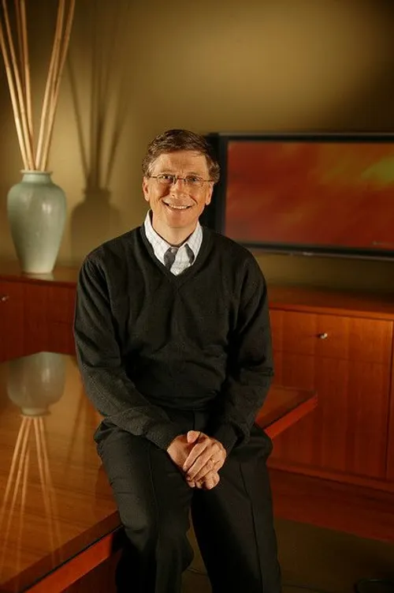
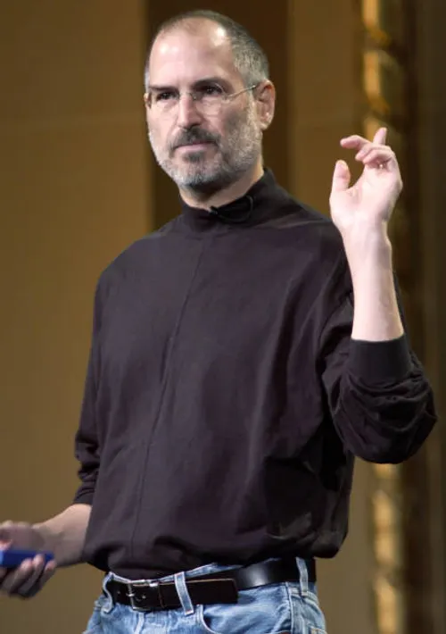

Architect of the Digital World.
I craft clean, user-centric web experiences where technology serves intuition.

My Philosophy
"Talk is cheap. Show me the code."
"Measuring programming progress by lines of code is like measuring aircraft building progress by weight."
"Simplicity is the ultimate sophistication. It takes a lot of hard work to make something simple, to truly understand the underlying challenges and come up with elegant solutions."
My Journey
2024 - Present
Web Developer - Inoks Capital
Actively developing my skills in a professional environment, with a focus on backend technologies and modern frontend frameworks like React under the mentorship of senior developers
2022 - 2024
Second Degree - CFPT DE TERNIER
Specialized in web accessibility, linux command, project management with scum, C# POO.
My Toolkit
üíª Langages & Frameworks
- C# & .NET Framework
- JavaScript (ES6+)
- HTML5 & CSS3
- React
- Blazor/Razor
- Python
üõ†Ô∏è Outils & Plateformes
- Git & GitHub
- Microsoft Azure
- Dev ops
- Visual Studio Code
üí° Concepts
- REST APIs
- Flexbox & Grid
- Frontend
- backend
- WCAG
- SCRUM
Like what you see?
Let's build something great together. Contact me to discuss your project.
Get in Touch